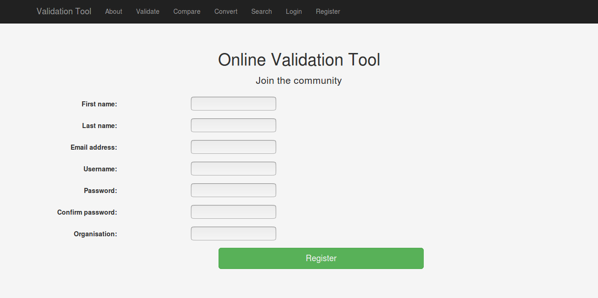

GSoC @SPDX — Week 1
Week 1 Target : [Development Phase-1] : Working on the initial structure and design of the tool.
For this summer, I’m working on the Online Validation Tool at SPDX as a Google Summer of Code student. According to the GSoC schedule, coding period began on Monday 30th May, 2017. This is the implementation time where you convert your project plan in working code. I am highly thankful to my mentors Gary O’Neall and Philippe Ombredanne and other community members for all the discussions and drafting my project plan.
In the first week, I started by setting up virtual environment for hassle free developing and testing without any external packages mucking up the result. I then created the Django project application and started with the website app building the initial structure of UI. I used bootstrap for the front-end framework.
